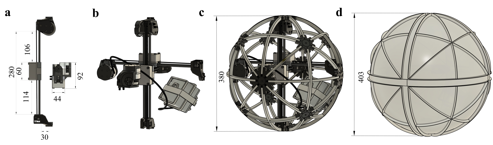
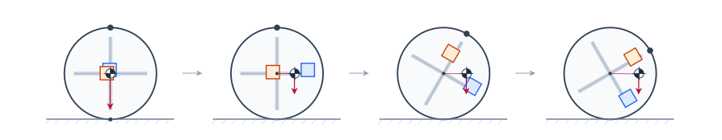
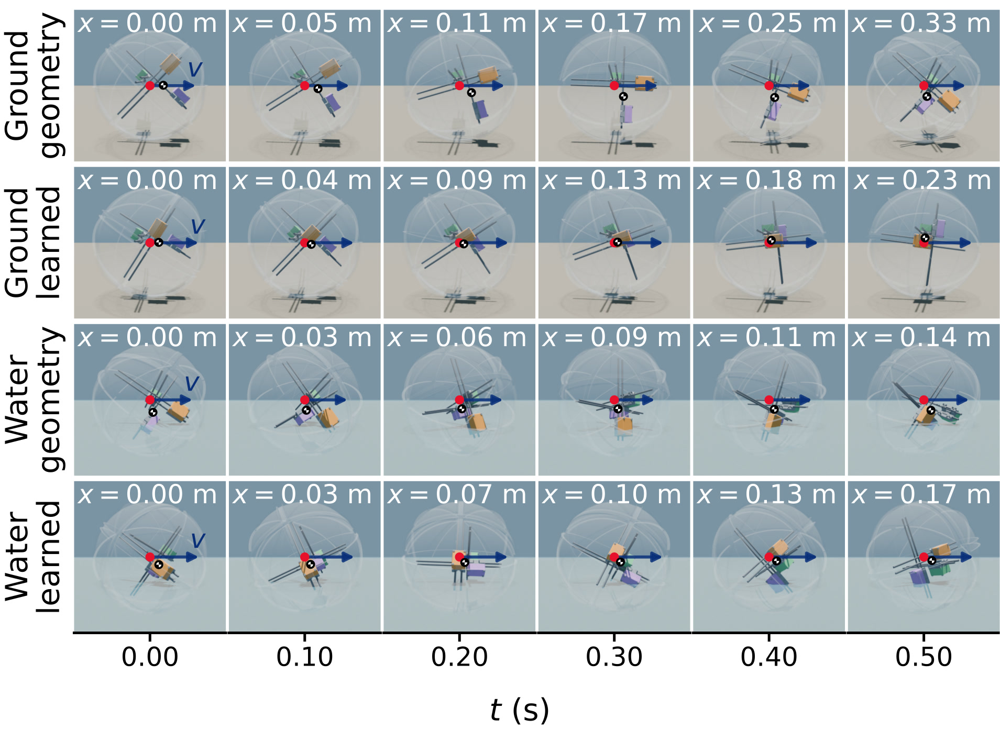
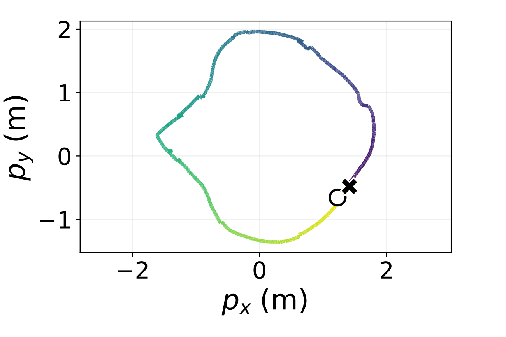
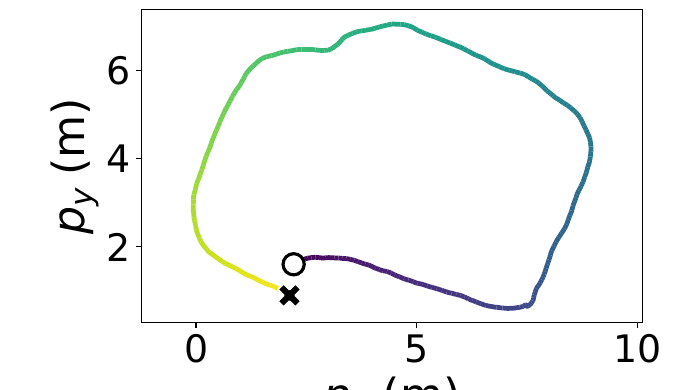
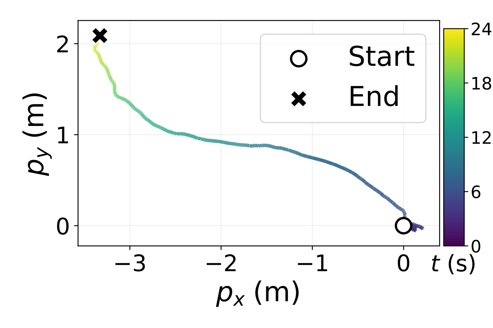
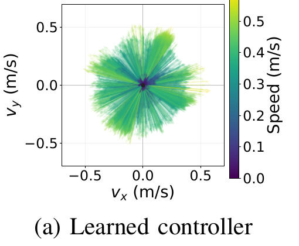
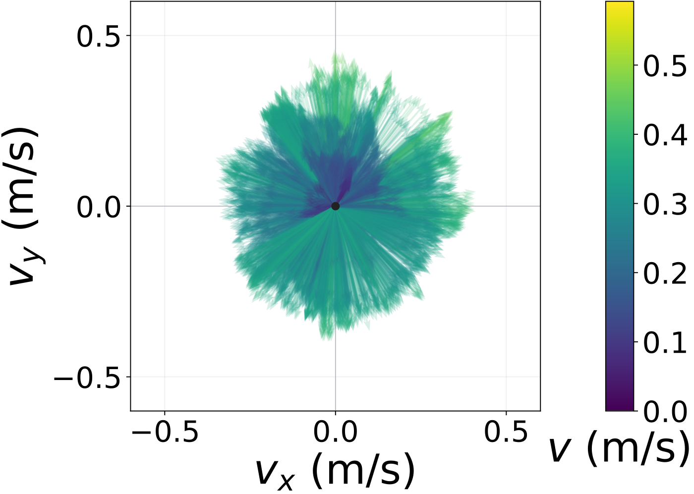
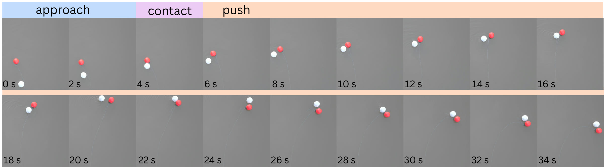

Anonymous Institution
Anonymized submission; the authors and the affiliation are withheld. The software and the hardware design will be open sourced on acceptance.
MARBLE navigates amphibious environments without hardware reconfiguration, using one locomotion system.
Field robots must traverse varied terrain and obstacles while remaining robust to water, debris, vegetation, and physical contact. We present MARBLE, a fully enclosed omnidirectional amphibious rolling robot driven entirely by internal mass redistribution. Three mutually orthogonal linear sliders shift internal masses to generate body rotation, while an orientation-aware controller maps planar velocity commands into slider positions. A rigid spherical shell encloses all active mechanisms and simultaneously serves as the terrestrial contact surface, buoyant enclosure, and mounting structure for passive fins that enable water-surface propulsion. Rotation of the same shell architecture hence produces rolling on land and surface propulsion in water without mechanical reconfiguration or separate locomotion actuators. The spherical morphology further allows the robot to accommodate changes in body orientation and contact location during direct interactions with terrain and obstacles. We evaluate MARBLE through omnidirectional locomotion characterization, traversal across heterogeneous terrestrial environments, aquatic surface locomotion, land-water transitions, and deliberate obstacle interactions. These experiments demonstrate how a single enclosed mechanical architecture can combine omnidirectional mobility, cross-medium locomotion, and tolerance to environmental contact. MARBLE provides a compact design for field mobility across heterogeneous terrain, obstacles, and land-water transitions.

Three orthogonal mass sliders change MARBLE's center of mass dynamically to induce rolling. All of the actuation is enclosed in a sealed shell. The shell acts as a buoyancy device, and symmetrically distributed fins work to propel MARBLE when operating on water.
| Outer diameter | 387 mm |
|---|---|
| Shell mass | 1.2 kg |
| Fin height | 8 mm |
| Mass sliders | 3 × 700 g |
| Slider stroke | 220 mm |
| Motors | CubeMars GL40 II |
| Position control | 100 Hz |
| Battery | 4S LiPo, 16 V |
Simplified example of how MARBLE uses moving mass to roll.


The speed of MARBLE was characterized on Land, Water, and mixed terrain.



Trained vs geometric controller velocity characterization.


MARBLE's enclosed actuation results in a contact resistant design that can push past obstacles without injury.

One or two sentences: the main result and current limitations.